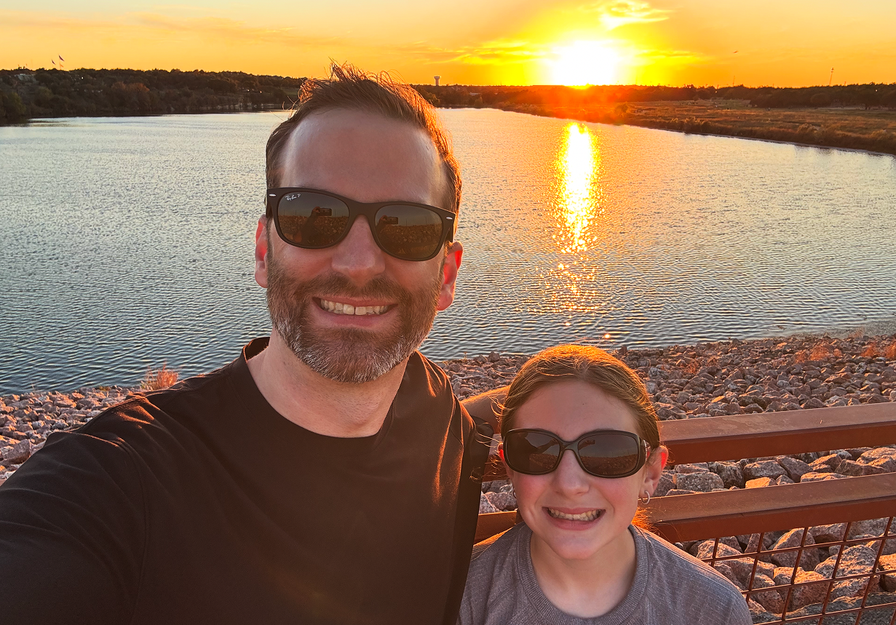

Keith Weston
User Experience Designer in Austin, TX
Lead Designer, Design System @ Indeed

About
Hello! I'm Keith.
I am a lead UX designer with 15 years of experience specializing in design systems and mobile apps. I've worked for large and small companies across gaming, healthcare, logistics, and HR technology.
I've loved technology all of my life, and graduated college with a Computer Information Systems degree. Thinking I would be a front-end developer after college, I discovered my love for design and understanding why people interact with technology the way they do.
Personally, I'm a husband and a dad of three, living in Austin, Texas. Family life has shaped how I work. It's taught me patience, perspective, and the value of building and maintaining over time.
I enjoy board sports, both snowboarding and skateboarding, and try to get outside as much as possible without hurting myself too much. I've been into video games since I was a kid and I credit video games with kick starting my interest in UX. I love a good french press in the morning, and usually have some electronic music on while I work.
Feel free to contact me via LinkedIn or email.
✌️